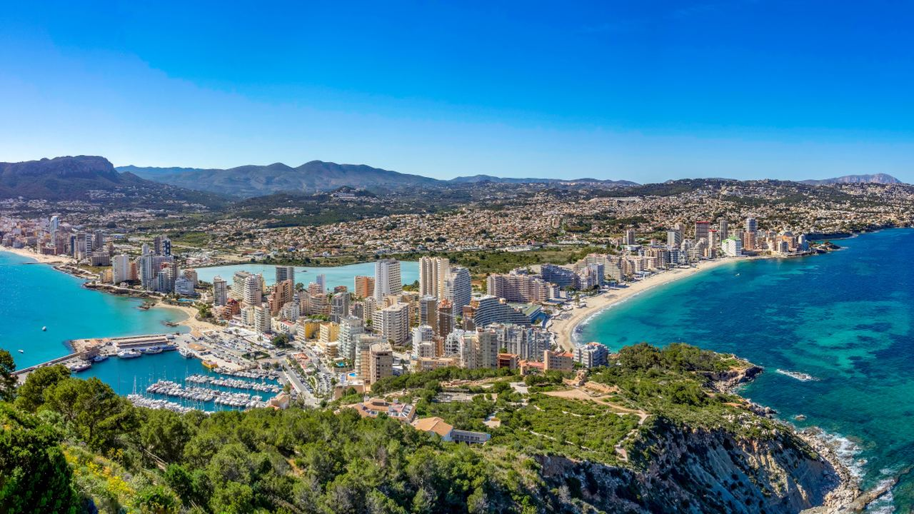
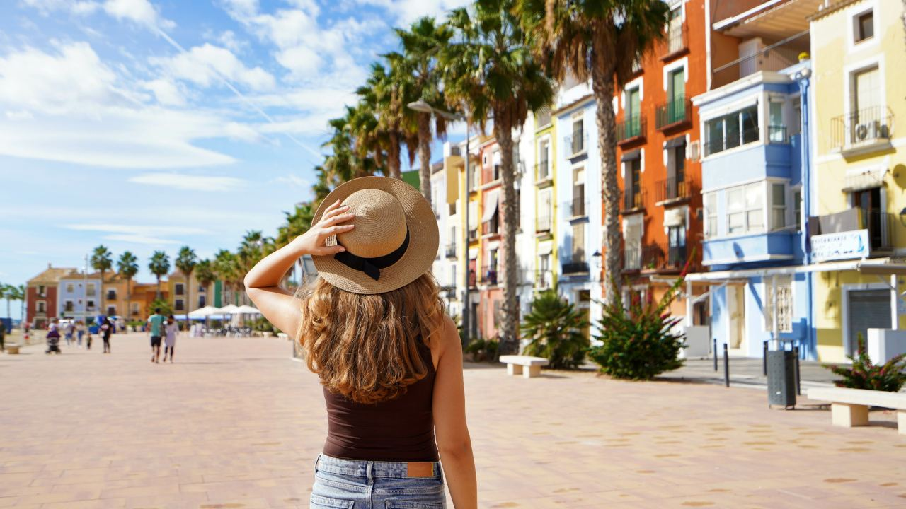
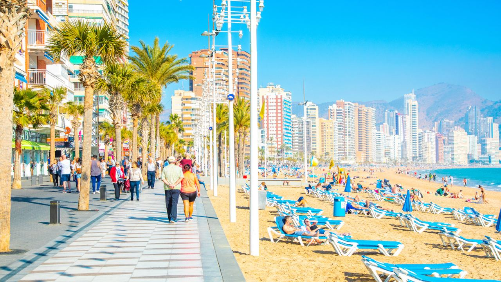
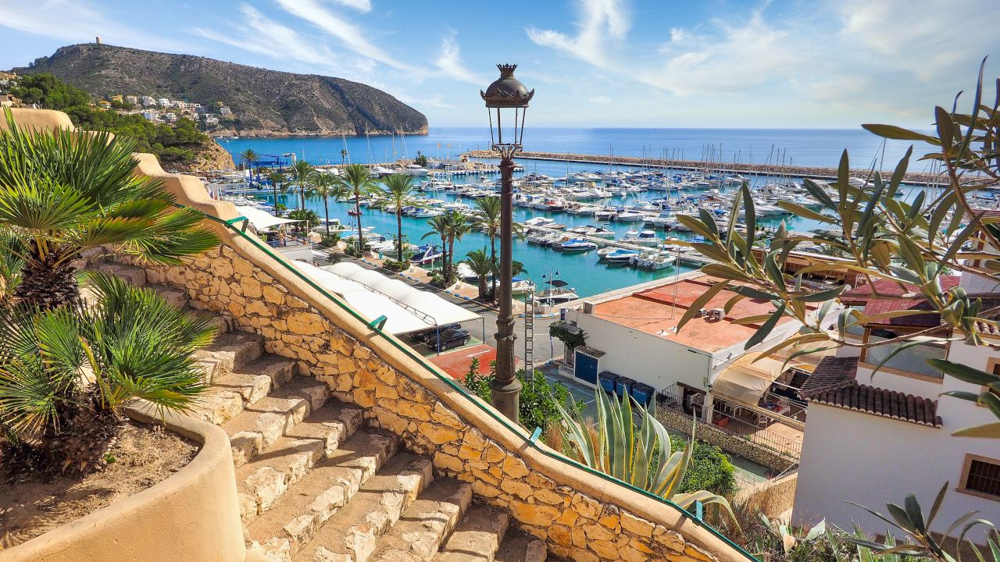
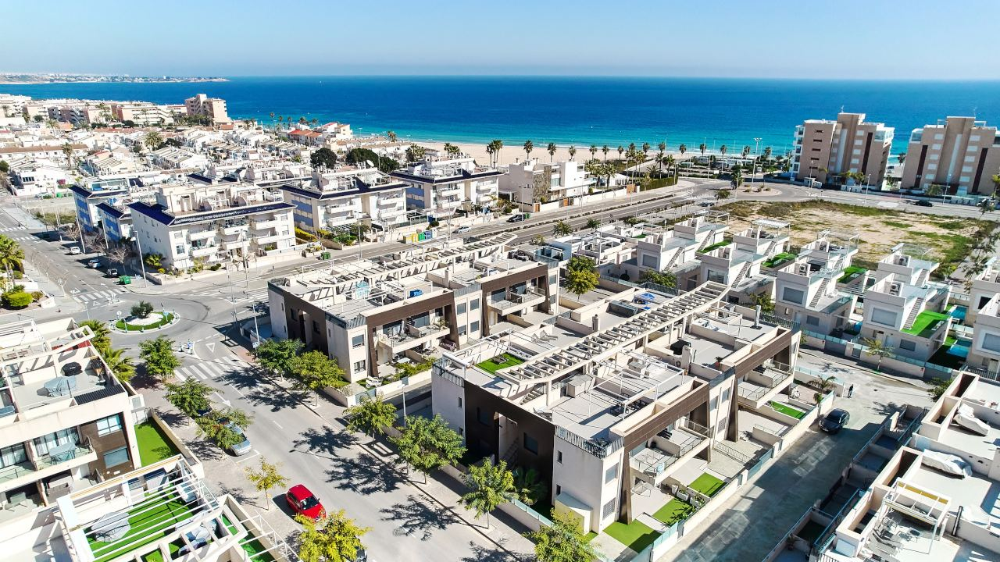

Vivir en España
Costa Blanca: ¿cómo se vive en la costa española?
 Por Lucyna Gacek · · actualizado · 3 min de lectura
Por Lucyna Gacek · · actualizado · 3 min de lectura

En resumen: Vivir en la Costa Blanca significa unos 300 días de sol al año, máximas de unos 17 °C en invierno, un coste de vida moderado y una de las mayores comunidades internacionales de España. El aeropuerto de Alicante conecta con toda Europa, y la AP-7 y el TRAM recorren la costa. El norte (Jávea, Calpe, Altea) es más verde y caro; el sur (Torrevieja, Orihuela Costa), más llano, seco y asequible. España ocupa el puesto 27 de 163 países en el Global Peace Index 2026.
La Costa Blanca recorre más de 200 km de la provincia de Alicante, de Dénia a Pilar de la Horadada. Para muchos empieza como destino de vacaciones y acaba siendo su casa, también para quienes vienen de Madrid o del interior buscando el mar.
Este es un retrato honesto del día a día: lo que se gana, lo que cuesta y qué municipios encajan con cada estilo de vida.
La vida diaria

Aquí la vida se hace en la calle. La mañana empieza con un café en una terraza, mucha gente camina o pedalea junto al mar y el mercadillo semanal es un acontecimiento social. Los inviernos son suaves, con máximas de unos 17 °C en enero, y los veranos calurosos, de 30–31 °C en agosto. Llueve poco, pero en otoño puede llegar alguna tormenta fuerte. Más en el clima en Alicante.
Costes, sanidad y seguridad

- Coste de vida – la compra, comer fuera y el transporte tienen precios moderados. La vivienda ha subido mucho desde 2023, sobre todo en el norte y en Alicante ciudad.
- Sanidad – grandes hospitales públicos en Alicante, Elche, Torrevieja, Dénia y Villajoyosa, y muchas clínicas privadas.
- Seguridad – España es el país 27 de 163 en el Global Peace Index 2026. En la costa, el riesgo principal son los hurtos en lugares concurridos.
Cómo moverse
El aeropuerto de Alicante-Elche está a unos 10 km de la ciudad y tiene vuelos directos a toda Europa durante todo el año. La AP-7 y la N-332 recorren la costa, y el TRAM une Alicante con Benidorm, Altea, Calpe y Dénia. Hay AVE de Alicante a Madrid en unas 2 horas y 20 minutos. Fuera de las ciudades grandes, el coche sigue siendo útil.
Los mejores municipios para vivir

- Alicante – una ciudad de verdad, con trabajo, cultura, universidad y el aeropuerto al lado.
- Benidorm – servicios todo el año, grandes playas y mucha demanda de alquiler.
- Calpe y Altea – mar y montaña, internacionales pero con ambiente de pueblo.
- Jávea y Dénia – verdes, con edificación baja y muy familiares.
- Torrevieja y Orihuela Costa – soleadas, llanas y con las viviendas más asequibles junto al mar.
- Cumbre del Sol – urbanización tranquila en la ladera con vistas al mar, entre Jávea y Moraira.
Una comunidad internacional
En la Costa Blanca viven personas de toda Europa y de América Latina, y la provincia de Alicante es una de las de mayor proporción de residentes extranjeros de España. Hay colegios internacionales, clubes y asociaciones en casi todos los municipios. Al mismo tiempo, las tradiciones valencianas siguen muy vivas, con las Hogueras de Alicante o los Moros y Cristianos de muchos pueblos.
Mudarse y comprar

Lo más habitual es alquilar unos meses y comprar cuando ya se conoce la zona. Lea nuestra guía para mudarse a España paso a paso y sobre la vida después de la mudanza.
Preguntas frecuentes
¿Es la Costa Blanca un buen lugar para vivir?
Para mucha gente, sí: clima suave, coste de vida moderado, buena sanidad y ambiente internacional. El mejor municipio depende del presupuesto y del estilo de vida.
¿Qué zona de la Costa Blanca es mejor para vivir?
El norte (Jávea, Calpe, Altea) es más verde y de mayor nivel. El sur (Torrevieja, Orihuela Costa) es más soleado, llano y asequible. Alicante ofrece vida de ciudad.
¿Es cara la Costa Blanca?
Los gastos diarios son moderados. Los precios de la vivienda varían mucho, desde algunas de las casas más asequibles junto al mar en el sur hasta precios altos en Jávea, Altea y Moraira.
¿Hace frío en la Costa Blanca en invierno?
Poco. En enero las máximas rondan los 17 °C y las mínimas los 6–7 °C.
Su lugar en la Costa Blanca
Vivimos y trabajamos en la Costa Blanca y conocemos sus municipios calle a calle. Escríbanos y cuéntenos cómo quiere vivir; le propondremos las zonas y viviendas que encajan.
Fuentes: AEMET – Climate normals 1991–2020 · Institute for Economics & Peace – Global Peace Index 2026 · INE – Population statistics · Tinsa – Property price index